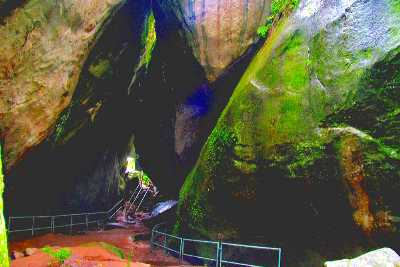

Wayanad is a rural district in Kerala state, southwest India.
In the east, the Wayanad Wildlife Sanctuary is a lush, forested region with areas of high altitude, home to animals including Asiatic elephants, tigers, leopards and egrets.
In the Ambukuthi Hills to the south, Edakkal Caves contain ancient petroglyphs, some dating back to the Neolithic age.
Banasurasagar Dam

Lying in the lap of the Banasura hills in the Wayanad district is the picturesque Banasura Sagar dam.
Banasura Dam is the largest earthen dam in the country and the second-largest in Asia.
The view of the sprawling reservoir from the top of the dam is breathtaking.
Adventures like speed boating are readily available, and a trek up to the Banasura Peak is filled
with streams, diverse flora, fauna, lush tropical green and majestic waterfalls
Chembra Peak

Located close to the bumbling town of Meppady and just 8 km south of Kalpetta, stands the highest peak of
the Wayanad Hill Range- the Chembra Peak at an altitude of 2000 meters above sea level.
The Chembra peak offers a panoramic view of not only the entire Wayanad district but also a large chunk
of Kozhikode, Malappuram and Niligiri districts.
Edakkal Caves

Famous for its exquisite rock and wall carvings, the pre-historic Edakkal Caves are two naturally occurring alcoves located in the Wayanad district of Kerala.
The caves measure at a massive length and width of 96 and 22 feet respectively and lie 1200 metres above the sea level.